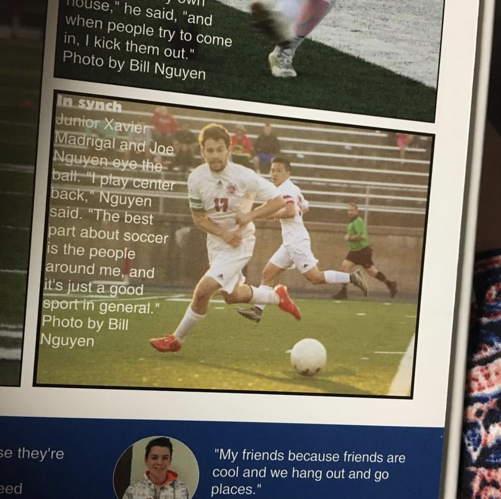

Joe's senior year photos were taken by a friend of his. Him and his friends loved to take photos.

On the Millard South Soccer team, Joe primarily played defense, but also played wing.
Joe has always liked the idea of becoming a doctor and saving people's lives.